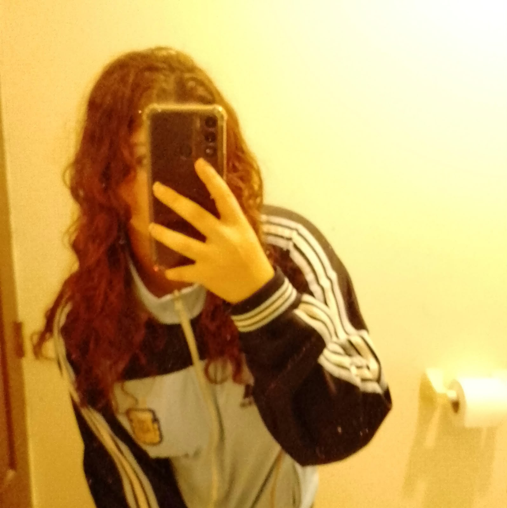
Amo tu cabello así, me encanta, es precioso y te queda genial.
Quiero poder seguir viendolo siempre, como cambia de color y forma con los años.♡
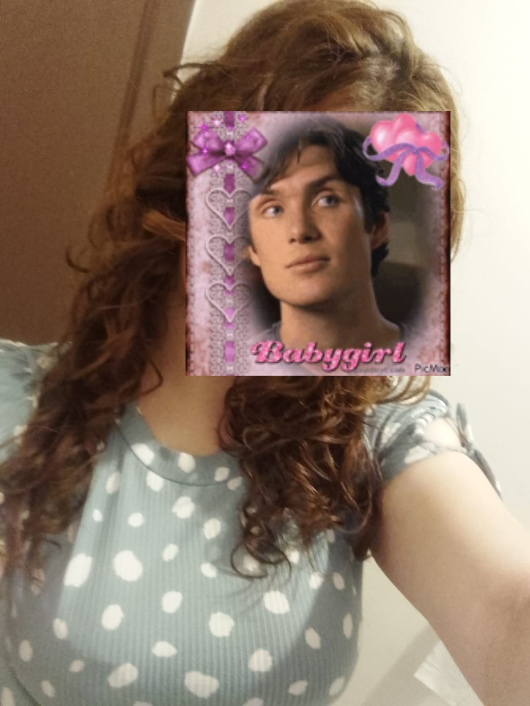
Está hermoso en esta foto tú pelo tmb, eres muy hermosa, no creo haber tenido
la oportunidad de decirtelo lo suficiente nunca ♡
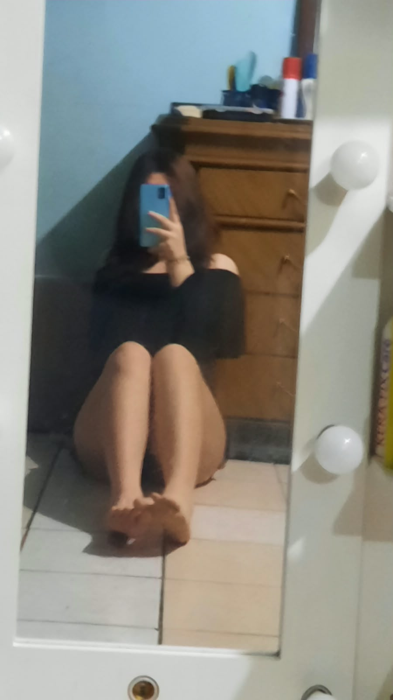
Así lizo tmb me gusta, siempre me gusta tu pelo.
La blusa negra q llevas en esta foto es muy bonita ♡
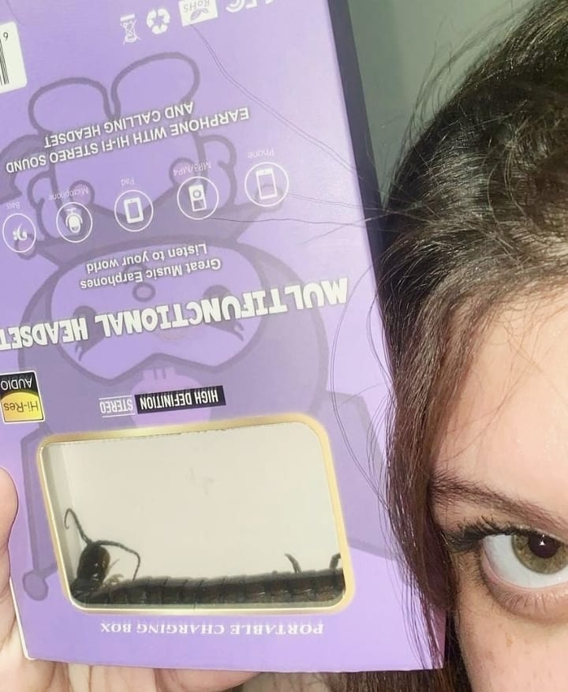
Que ojos tan bellosss por diosss. La foto un poco rara a lo mejor pro
esq me encanta como se te ven los ojos en esta jajajaja ♡
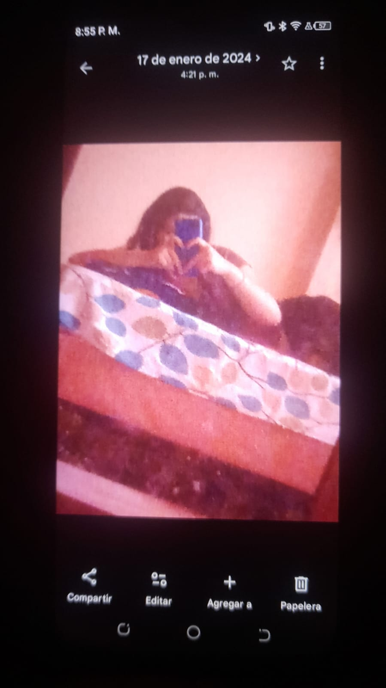
Son fotos de fotos q hice cuando mi viejo movil empezó a fallar, habia cosas que no
quería perder. Me gusta mucho esta foto, me la mandaste hace años ya ♡
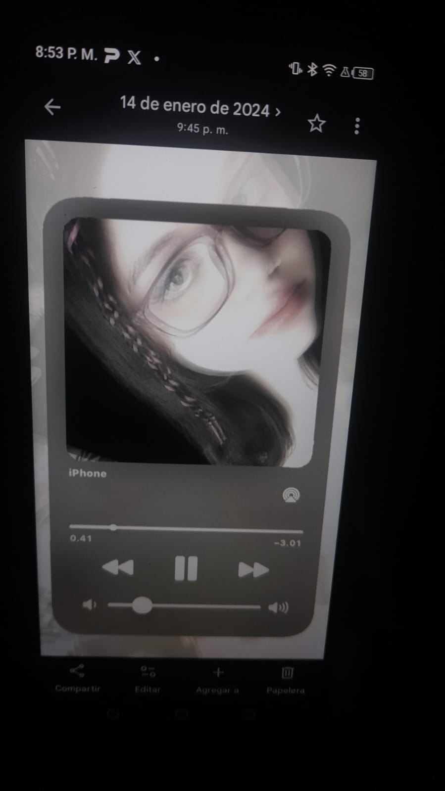
Hermosa con gafas tmb, podrias ponerte lo q sea y probablemente te quedaría genial. ♡
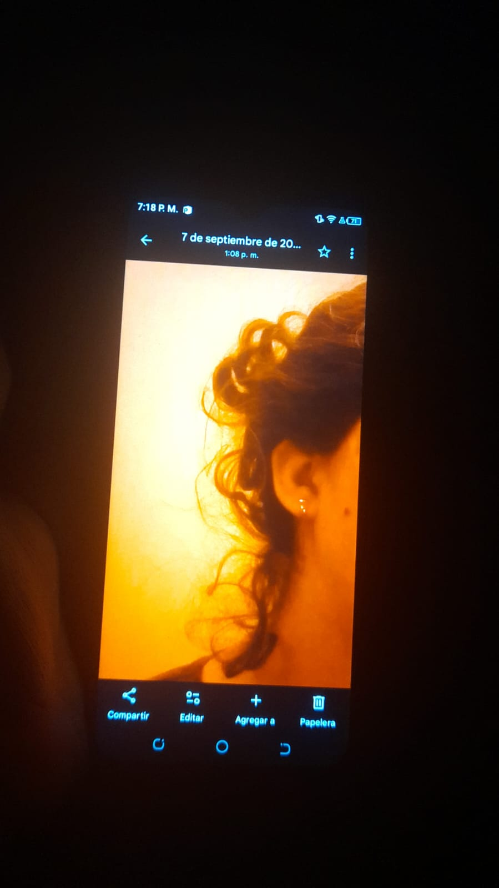
Esta fue mi foto favorita de ti hace mucho, me gustaba como se veía tu pelo,
aunque sé que a ti no mucho jajaja, estás bella ♡
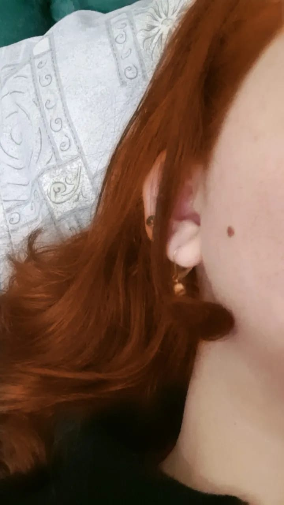
Esta la elegí prq me gusta mucho como se ve tu piel, así bien suavecita,
me la comia a besos. Cualquier responsabilidad sobre ese comentario recae en que
estoy cansado mientras hago esto jajajaj. Además ese lunar que tienes me gusta mucho,
se ve en muy pocas fotos. ♡
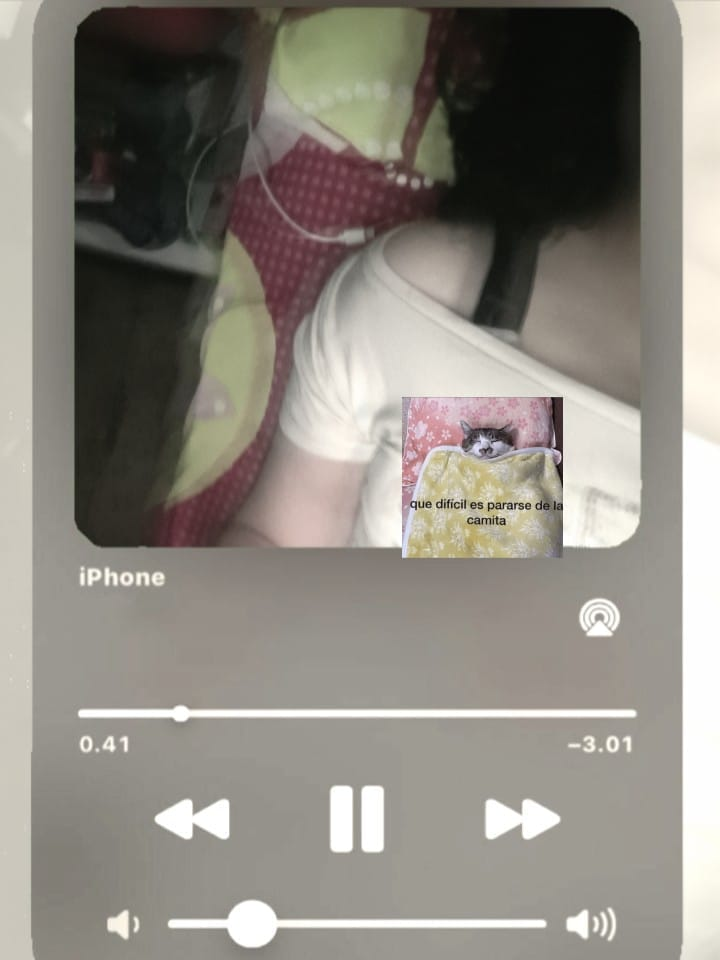
Me gusta mucho esta foto, si algún día escribo una canción me gustaría que esta
fuera la portada, está preciosa de vrd. ♡
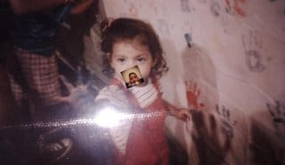
Miraaaaa, que niña más linda, ahí donde la ves creció en una mujer muy hermosa tmb.
Te veías muy bonita de chiquita, quiero que mi hija sea igual de bonita que tú,
de un modo u otro, si no es mi hija secuestro a la tuya jajajaj. ♡
Otra foto preciosa de la niña más bella que hay, hubo y habrá. Me habría gustado
crecer a tu lado, no solo desde que eras más joven sino tmb estar fisicamente ahí.
Tecnicamente si te he visto crecer de algun modo igualmente, te conozco desde que tenias 11,
tecnicamente eras un feto y ahora ya tienes 18, como pasa el tiempo. ♡
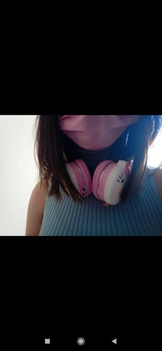
Esta es una de las primeras fotos que me pasaste de tí, no es como que se vea mucho,
pero para mí en ese momento era algo especial, de hecho fue mi fondo de bloqueo durante
años, obvio no así, una version que hice con un filtro, ahora te la muestro tmb,
creo que la tuve hasta 2023 o algo así jajajja. ♡
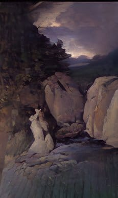
La foto en cuestión, estaba bonita así como fondo, hubo otra que puse de fondo
de whatsapp tmb así con filtro, pero perdí la foto original y la foto del fondo,
solo tengo capturas en las que sale en el fondo jajajaj, luego verás alguna. ♡
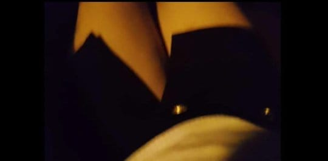
Otra de las primeras fotos que me pasaste, me gusta y me trae recuerdos,
la camara era muy bonita. ♡
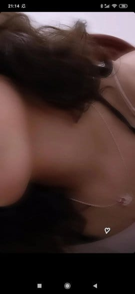
Nuevamente, otra de las primeras fotos que me pasaste, está muy bella, se ve tu piel
así suavecita, un poco de tu pelo q tmb lo tenias bonito y un collar que creo que
no te he vuelto a ver, tmb es el collar de la foto en que te llamé mesita por
primera vez jajajajaj, no tengo esa foto por desgracia. ♡
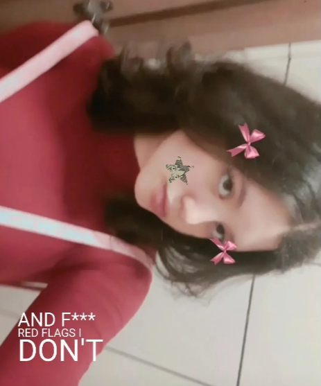
Te ves preciosa en esta foto, como en todas, no me voy a cansar de decirlo,
quien te manda a bella, hermosa, preciosa, guapa, linda, bonita, no me quedan adjetivos
pero creo que te haces a la idea. Creo que siempre te he dicho que me encanta cuando
tienes el pelo rizado, pero la verdad esq así lizo tmb me gusta mucho,
me gustas mucho tú probablemente, por eso me gusta como te ves sin importar
como estés. ♡
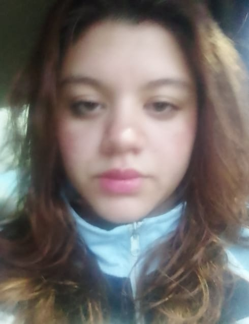
Aquí tienes cara de cansada o enojada no sé jajajaj, te ves muy bonita igual,
es de las pocas fotos tuyas que tengo donde puedo ver tu rostro directamente,
en la mayoría se ven partes de tu cara por separado, por eso antes de ver todo tu rostro
ya me gustaban tus ojos, tus labios, tu cuello, tus mejillas, tus cejas, tu pelo, tu nariz,
toda tú. Luego al verlo todo en conjunto es algo distinto, la pasta sola está buena,
la carne sola está buena, pero la pasta con carne está mejor, así mismo es poder verte. ♡
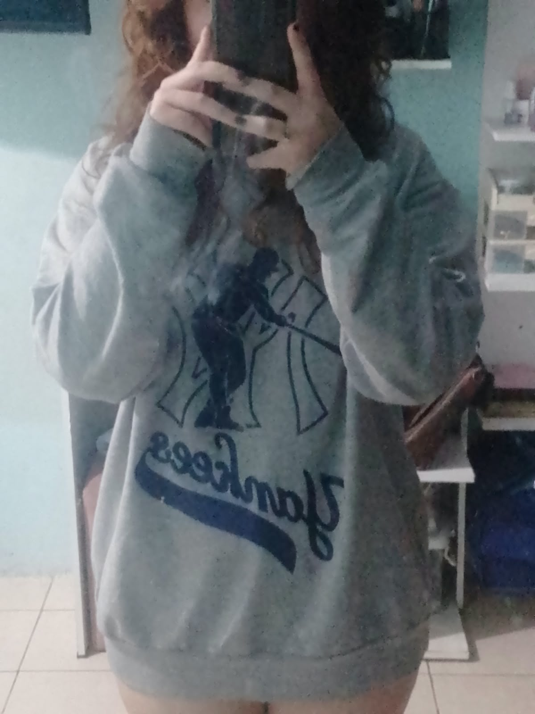
BELLA BELLA BELLA BELLA BELLA BELLA BELLA BELLA BELLA BELLA BELLA BELLA
BELLA BELLA BELLA BELLA BELLA BELLA BELLA BELLA BELLA BELLA BELLA BELLA
BELLA BELLA BELLA BELLA BELLA BELLA BELLA BELLA BELLA BELLA BELLA BELLA
BELLA BELLA BELLA BELLA BELLA BELLA BELLA BELLA BELLA BELLA BELLA BELLA
BELLA BELLA BELLA BELLA BELLA BELLA BELLA BELLA BELLA BELLA BELLA BELLA
BELLA DIJE ♡
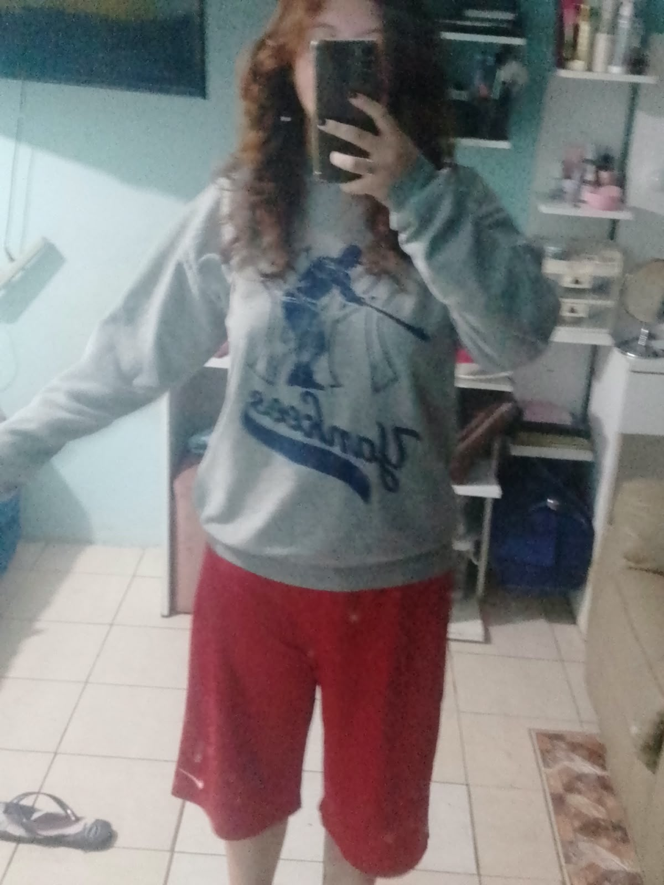
Por si no quedó ya claro, me gusta como te ves vestida así, obvio me encanta cualquier
cosa que te pongas, pero la ropa así que se ve muy simple me gusta mucho. Además de
que con tu pelo ya es incluso mejor, bellísima. ♡
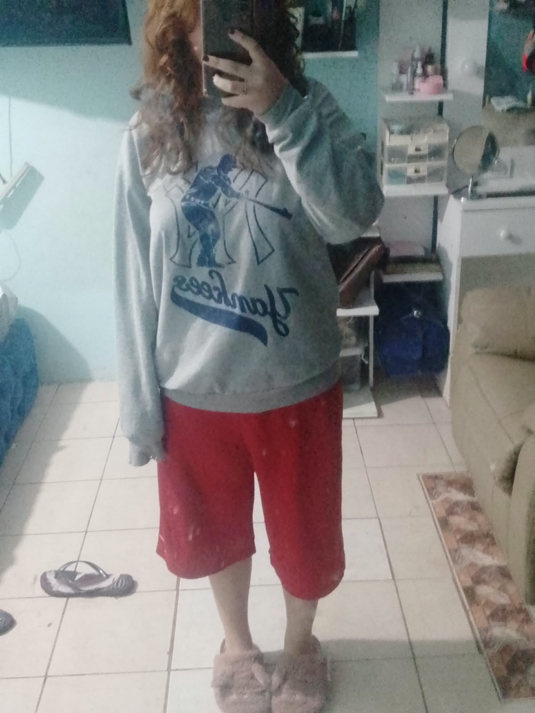
Preciosa, en esta hasta se ven las pantuflas jajajaj, que bonita. Es mi sueño,
estar cansado y verte así, abrazarte y decirte lo mucho que te amo, luego irnos a dormir
juntos así, de flojos los dos un rato. No te haces una idea de lo feliz que sería
en ese momento, no hay felicidad y paz más grande en el mundo que estar acostado en tus
brazos sin ninguna preocupación, incluso si son solo 5 minutos. ♡
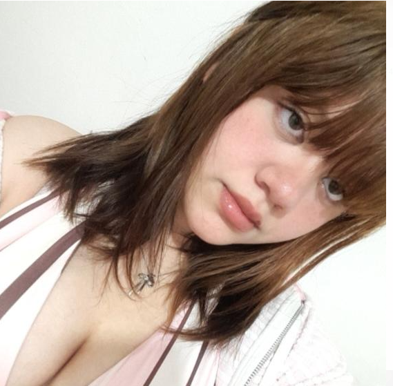
Última foto, la foto de perfil que tienes al momento en que estoy escribiendo esto,
el otro dia dijiste algo de q tenias mala cara o algo así cuando te dije q cuando
estamos en llamada a veces me quedo mirando la foto jajaja. Para mí te ves muy bonita,
además es la única foto con tu nuevo flequillo, te ves hermosa de vrd, se me hizo
más tarde de lo que debería prq me estuve un buen rato viendo las fotos, me va
a tocar apurar jajajaj. Eres demasiado bonita, me da celos pensar en toda la gente que
te ve, te voy a regalar un accesorio o algo que ciegue a la gente si se te quedan viendo
mucho. ♡
Me di cuenta que no puedo hablar de tu voz ni de tu risa prq no tengo audios,
así que añado una pequeña nota para recordarte lo mucho q amo tu voz y tu risa,
me alegra mucho escucharte. ♡